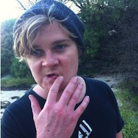

Rad.Design
Rad.Design Home
Rupert Dance
Contact Me: Twitter
Rad.Design is an innovative start-up working in the mobile and web development fields. Our small creative team utilises the latest technology to build beautiful, nimble and functional apps and sites that delight users.